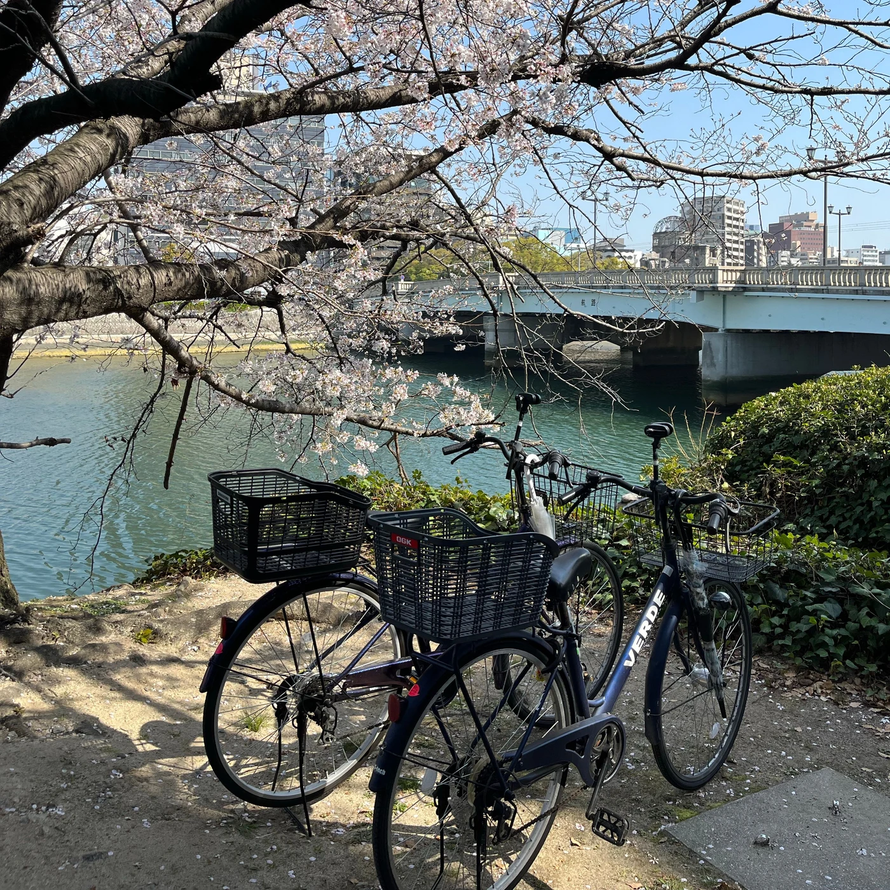

Фритрек и нулевой спринт: Подготовка к работе

СтартЭто было самое начало пути. На этом этапе важно было проникнуться основами и настроиться на учёбу. И, возможно, подумать, как новые знания могут повлиять на ваше будущее.
Курс по вёрстке был частью университетской программы. Я знал только основы HTML и CSS, а с Grid и Flexbox ещё не работал. Особых ожиданий от курса у меня не было.